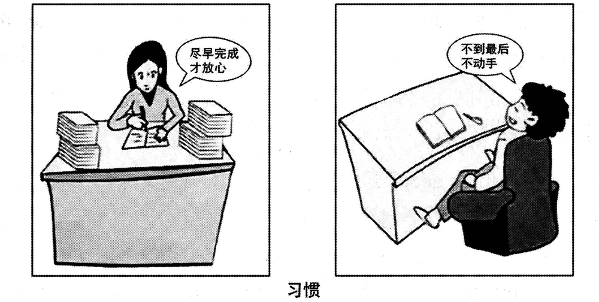

A小作文 · 受学生会之托，给全体国际学生发一则歌唱比赛通知（10 分）
The student union of your university has assigned you to inform the international students about an upcoming singing contest. Write a notice in about 100 words.
Write your answer on the ANSWER SHEET.
Do not use your own name in the notice. (10 points)
💭 审题三件事
- ⭐⭐⭐ 先定落款，再动笔。Directions 没给替代名 ⟹ 落 Student Union。这一步不先想，写到最后手一顺就签出 Li Ming——十四年的肌肉记忆正好在这一年失灵。
- ⭐⭐ 按「读者拿它做什么」排信息。想上台的人要知道：何时何地 → 能不能参加、怎么唱 → 怎么报名、截止哪天 → 有什么奖；只想听的人只要一句：你也欢迎、来给朋友加油。四段各一件事，一百词正好。
- ⭐⭐ 「外国人」这道筛子落在语言上。You may sing … in any language; a Chinese song is welcome but not required.——任何语言都行（不会唱中文歌的人也敢报名），中文歌欢迎（会唱的人有个台阶），但不强求（别让人以为唱中文才能拿名次）。
⭐⭐ 十五年 Part A：2020 是第一则「落款要自己推」的通知
| 年份 | 体裁 | 读者是谁 | 第一句怎么起 | 落款 | 本年特有的坑 |
|---|---|---|---|---|---|
| 2007 | 建议信 | 校图书馆（机构） | I am writing to put forward several suggestions … | Li Ming | 建议只有口号没有可执行动作；写成投诉信 |
| 2008 | 道歉信 | 具名熟人 Bob | I am writing to apologize for … | Li Ming | 只道歉不给方案；方案没有「动作＋方式＋时间」 |
| 2009 | 致编辑信 | 报社编辑 | I am writing to express my concern about … | Li Ming | 建议里没有一条是编辑自己能办的 |
| 2010 | 通知 NOTICE （招募） | 一群人（无称呼） | Volunteers are needed for … | 机构名（题干给） | 写 Dear ＝ 体裁错；落款签 Li Ming |
| 2011 | 推荐信 · 荐物 | 未具名的一个朋友 | How have you been? I am writing to recommend … | Li Ming | 写成影评／剧透结局；通篇只有「我」没有「你」 |
| 2012 | 欢迎邮件 （以组织名义） | 一群国际学生 但仍是书信 | On behalf of the Students’ Union, I would like to extend a warm welcome to … | Li Ming ＋ Students’ Union | 按 2010 的手感写成通知；通篇 I 没有 we |
| 2013 | 邀请邮件 （担任角色） | 本校外教 | As chair of the English Club, I am writing to invite you to … | Li Ming | 只邀请、不交代工作量；没给答复期限 |
| 2014 | 建议信（撞 2007） | 本校校长 | As a third-year student, I am writing to suggest … | Li Ming | 建议写成对学生的劝告；用 should 下指令 |
| 2015 | 荐书邮件（撞 2011） | 读书会的一群会员 | As host of next Friday’s reading session, I would like to recommend … | Li Ming | 理由不对着读书会用途；剧透 |
| 2016 | 通知 NOTICE （告知 · 撞 2010） | 刚入学的国际学生（撞 2012） | Welcome to the University Library! To help all newly-enrolled international students … | Li Ming | 按 2012 写成欢迎信；信息写成广告 |
| 2017 | 推荐邮件 · 荐地方 （撞 2011／2015） | 具名的新到外籍教授 | Welcome to our city! Now that you have settled in, I would like to recommend … | Li Ming | 理由对谁都成立；推他家门口就有的；Dear James |
| 2018 | 邀请邮件 · 请出席 （撞 2013） | 全校国际专家（一群人） | On behalf of the Students’ Union, I am writing to invite you to this year’s graduation ceremony. | Li Ming | 时间地点写成「下个月」「在学校」；漏了为什么请您；称呼写成单数 |
| 2019 | 答复邮件 · 回复咨询 （十三年第一次） | 一位国际学生志愿者 | Thank you for your email about the “Aiding Rural Primary Schools” project. | Li Ming | 不回应来信就开讲；角色反了；忘了他是外国人 |
| 2020 本题 | ⭐⭐ 通知 NOTICE · 活动 （撞 2010／2016） | 全体国际学生（一群人 · 上台的 ＋ 来听的） | To welcome the New Year, the Student Union will hold a singing contest for all international students … | ⭐⭐⭐ Student Union （题干没给，自己推） | ⭐⭐⭐ 手顺签了 Li Ming；写成信（Dear／I am writing）；只招选手忘了观众；没说唱什么语言 |
| 2022 | 邀请邮件 （带队参赛） | 英国大学的教授 | On behalf of …, I am writing to invite you to … | Li Ming | 漏时间/地点/事由 |
- ⭐⭐ 2014 回到 2007 · 2015 回到 2011 · 2016 拼了 2010 × 2012 · 2017 拼了 2011／2015 × 2013 · 2018 拼了 2013 × 2012／2016 · 2019 新体裁（答复信）· 2020 又回头：通知第三次（2010 × 2016 的体裁 ＋ 2013 的事件「upcoming … contest」＋ 2012／2016／2019 的读者）。⟹ 「押体裁没用」第八次验证——押中了「通知」也没用，今年的坑在落款：前两次通知落款都是题干给的（2010 机构名 · 2016 Li Ming），今年题干一个名字都不给。
- ⭐⭐⭐ 十五年里第一次没有 use “…” instead（脚本扫 2007–2019 ＋ 2022 各页 Directions 核过：其余十四年全有）。⟹ 四问里的「以谁的名义」和「落款写什么」这一年是同一个答案：题干说 the student union has assigned you ⟹ 发布者是学生会 ⟹ 落 Student Union。
- ⭐⭐ 外国读者十五年里第八次、连着五年：2008 加拿大房东 · 2012 国际学生 · 2013 外教 · 2016 国际新生 · 2017 澳大利亚教授 · 2018 国际专家 · 2019 国际学生志愿者 · 2020 全体国际学生。「外国人」这道筛子今年落在唱什么语言——2016 是「我们这边讲英语」（前台会英语），2020 是「你那边唱什么都行」（任何语言）。
- ⭐ 三场比赛：2013 the upcoming English speech contest（写给评委）· 2020 an upcoming singing contest（写给选手和观众）· 2022 the international innovation contest（写给带队的教授）——同一类事件、三种读者，写的东西完全不同：评委要知道工作量，带队人要知道赛程与事由，选手要知道规则与报名，观众只要知道几点到。
⭐⭐ 三次通知并排：2010 · 2016 · 2020（本页新增）
体裁都是 notice、格式都是非书信——变量是通知要读者做什么和落款从哪来。
| 对照项 | 2010 · 招募 | 2016 · 告知 | 2020 · 活动 |
|---|---|---|---|
| 题干动词 | a notice to recruit volunteers | providing … with relevant information | has assigned you to inform … about an upcoming singing contest |
| 读者 | 想当志愿者的学生 | 一群新入学的国际学生 | ⭐ 全体国际学生（上台的 ＋ 来听的） |
| 读者拿它做什么 | 决定报不报名 | 会用图书馆 | ⭐⭐ 两件事：要上台的决定报不报名；不上台的决定来不来听 |
| 身份从哪来 | 题干给：write for the Postgraduates’ Association | 题干给：Suppose you are a librarian | 题干给：The student union … has assigned you |
| 落款 | 题干给：Use “Postgraduates’ Association” instead | 题干给：Use “Li Ming” instead | ⭐⭐⭐ 题干不给 ⟹ 从「谁派的活」推：Student Union |
| 第一句 | Volunteers are needed for … | Welcome to the University Library! | To welcome the New Year, the Student Union will hold a singing contest for all international students … |
| 「外国人」这道筛子 | 来宾是外国人 ⟹ 志愿者要会说英语 | 读者是外国人 ⟹ 英文服务、英文书在几楼 | ⭐⭐ 读者是外国人 ⟹ 任何语言都能唱、中文歌不强求 |
⚠️ Directions 限定词清算表（开考先圈出来）
| 限定词 | 它约束什么 | 违反的后果 |
|---|---|---|
| The student union of your university has assigned you | ⭐ 你是替学生会写 ⟹ 以学生会口吻：the Student Union will … / tell us … | 正文写 I have been assigned to …（派活过程进了通知）；通篇 I |
| to inform | 告知：读者读完要能照做（几点、在哪、怎么报） | 写成宣传稿：The contest will be a great chance to show yourself … |
| the international students | ⭐ 全体国际学生、一群人 ⟹ 无称呼；⭐⭐ 语言筛子 | Dear international students,（体裁错）；只招选手、没一句给观众；通篇没想到语言 |
| an upcoming singing contest | 还没办 ⟹ 具体日期 ＋ 报名截止，截止在比赛之前 | 写成「下个月」「近期」；截止日期晚于比赛日 |
| singing contest | 唱 ⟹ 曲目、形式（独唱／组合）、时长、伴奏；比赛 ⟹ 名次与奖项 | 只有时间地点，规则一条没有 ⟹ 想报名的人还得再问一遍 |
| Write a notice | 标题 NOTICE 居中，无称呼、无敬语，落款机构 | Dear … / Yours sincerely ⟹ 体裁错 |
| in about 100 words | 95–115（标题、落款不计） | 写成 150 词挤占大作文时间 |
| Do not use your own name in the notice. | ⭐⭐⭐ 没有 instead ⟹ 落 Student Union；in the notice ＝ 全文任何地方都不出现真名 | 签真名有判零风险；签 Li Ming 是凭十四年的手感、题干并没让你用 |
🧩 筛子表：读者两个词 × 事件三个词（本页新增）
2016 两道筛子、2017 三道、2018 四道挂在读者身上，2019 读者 ＋ 项目名两边都挂；2020 也是两边：读者是 the · international（全体 · 外国），事件是 upcoming · singing · contest。过得越多越值钱，一道都不过的删掉。
| 候选信息 | 全体 | 国际 | 即将 | 歌唱 | 比赛 | 写不写 · 本文写成了哪一句 |
|---|---|---|---|---|---|---|
| ⭐⭐ 何时何地 | ✅ | — | ✅✅ | — | ✅ | the Student Union will hold a singing contest for all international students at 7 p.m. on December 27 in the University Concert Hall. |
| ⭐ 谁能上台、怎么上：独唱或组合 | ✅✅ | — | — | ✅ | ✅ | You may sing alone or in a group of up to four, |
| ⭐⭐ 唱什么语言 | — | ✅✅ | — | ✅✅ | — | in any language; a Chinese song is welcome but not required. |
| ⭐ 时长 ＋ 伴奏 | — | ✅ | — | ✅✅ | ✅ | Each performance should last no more than four minutes, and backing music can be provided. |
| ⭐⭐ 怎么报名 ＋ 截止 | — | — | ✅✅ | — | ✅✅ | To sign up, please come to Room 205 of the Student Center by December 20 and tell us which song you will sing. |
| ⭐ 奖项 | — | — | — | — | ✅✅ | Prizes will go to the top three performers. |
| ⭐⭐ 不上台的人也欢迎 | ✅✅ | — | ✅ | — | — | If you would rather listen, you are just as welcome. Come and cheer for your friends! |
| 评委是谁（如音乐系老师） | — | — | — | ✅ | ✅ | 备选：字数有余再加 The judges will be teachers from the Music Department. |
| 彩排时间 | — | — | ✅ | ✅ | — | 备选：A rehearsal will be held the day before.——报名的人才需要，可以报名后再通知 |
| 「音乐无国界、增进各国友谊」 | ✗ | △ | ✗ | △ | ✗ | ❌ 当信息写：意义口号不是信息；最多缩成一个目的状语（本文用 To welcome the New Year 交代由头，连「友谊」都没写） |
| 必须唱中文歌 | ✗ | ✗ | — | — | — | ❌ 不写：把一半读者挡在门外；「中文歌优先 / 加分」同样不写——比赛规则要对所有人公平 |
| 中国学生能不能报 | ✗ | ✗ | — | — | — | ❌ 不写：读者是国际学生，这条信息不是写给他们的 |
- ⭐⭐ 两个日期要有先后：比赛 December 27，报名截止 December 20 ——截止在前、留出一周排节目单。⭐ 只写日期不写星期：本页范文就这么做；我的盲写稿写了 Friday, December 18，一查 2019-12-18 是星期三（见 05+）——要写星期，先推一遍。
- ⭐ 地点写成一栋楼里的一个厅：in the University Concert Hall ——比 in our school 能核对；报名处写到房间号：Room 205 of the Student Center（学生会办公室）。
- ⭐ 规则只写三条：人数（up to four）· 语言（any）· 时长（no more than four minutes）——够报名的人决定唱什么，又不至于把通知写成章程。backing music can be provided 是给外国学生的一个小台阶：伴奏不用自己找。
- ⚠️ 报名渠道写「去哪 ＋ 报什么」：come to Room 205 of the Student Center … and tell us which song you will sing ——❌ 邮箱写成 su@xxu.edu.cn 这种占位符（我的盲写稿就这么写，像没写完）；要写邮箱就写一个像样的，或者像本文一样写办公室。
✍️ 范文（ 词 · 🟡 亮点点击看讲解）
NOTICE
事由 ＋ 时地To welcome the New Year, the Student Union will hold a singing contest for all international students at 7 p.m. on December 27 in the University Concert Hall.
怎么唱You may sing alone or in a group of up to four, in any language; a Chinese song is welcome but not required. Each performance should last no more than four minutes, and backing music can be provided.
报名 ＋ 奖项To sign up, please come to Room 205 of the Student Center by December 20 and tell us which song you will sing. Prizes will go to the top three performers.
观众If you would rather listen, you are just as welcome. Come and cheer for your friends!
Student Union
为迎接新年，学生会将于 12 月 27 日晚 7 点在学校音乐厅为全体国际学生举办一场歌唱比赛。
你可以独唱，也可以组成不超过四人的组合；演唱语言不限，欢迎唱中文歌，但不作要求。每个节目不超过四分钟，可提供伴奏。
报名请于 12 月 20 日前到学生活动中心 205 室，并告诉我们你要唱的歌曲。前三名将获得奖品。
如果你更想当听众，同样欢迎。来为你的朋友加油吧！
学生会
- ⭐⭐⭐ 落款签了 Li Ming 或真名。今年题干没给替代名——签真名有判零风险；签 Li Ming 是凭往年的手感，题干并没有让你用。✅ Student Union（派活的机构，也就是通知的发布者）。
- ⭐⭐ 体裁写成信：Dear international students, … I am writing to inform you that … Yours sincerely。题干两次写 notice（Write a notice · in the notice）⟹ 标题 NOTICE、无称呼、无敬语。
- ⭐⭐ 读者只写给想上台的人：通篇报名、规则，没一句给观众。inform the international students ＝ 全体——一句 If you would rather listen, you are just as welcome 就把另一半读者接住了。
- ⭐⭐ 读者忘了他们是外国人：通篇没说唱什么语言。反过来，写「必须唱中文歌」或「中文歌加分」同样失分——一个挡人，一个不公平。
- ⭐ 要点只有时间地点，没有规则和报名：想上台的人读完还得再问一遍——inform 没完成。
- ⭐ 口吻把派活过程写进通知：I have been assigned by the Student Union to tell you … ⟹ 通知以学生会口吻，「我」不出现。
- 语言❌ hold a singing competition for international students’（多余所有格）· ❌ in 7 p.m. · ❌ no more than four minute（漏复数）· ❌ welcome to sing Chinese songs（主语不清）· ❌ cheer up your friends（＝让朋友高兴起来） ⟹ ✅ at 7 p.m. · four minutes · a Chinese song is welcome · cheer for your friends（为……加油）。
- 字数about 100 words：95–115 最稳。本文 词（不含标题与落款）。
- ⭐⭐ 第一句一口气交代五样：To welcome the New Year, the Student Union will hold a singing contest for all international students at 7 p.m. on December 27 in the University Concert Hall.——由头 · 谁办 · 办什么 · 给谁 · 时地。通知没有称呼，「给谁」只能写进第一句：for all international students。
- ⭐ will hold：学生会的既定安排，用 will；the Student Union 第三人称自称——通知以机构口吻，不写 we will 也行，但全文别出现 I。
- ⭐⭐ 分号把「能」和「不必」连成一口气：You may sing … in any language; a Chinese song is welcome but not required.——前半给许可（may），后半给分寸（welcome but not required，与 2010 的 preferred but not essential 同一个句架）。
- ⭐ 规则用 should，许可用 may：Each performance should last no more than four minutes（要遵守）· You may sing alone or …（可以选）——情态动词一换，读者就知道哪条是硬的。
- ⭐ backing music can be provided：被动语态把「谁提供」藏起来（当然是学生会），给外国学生一个台阶：伴奏不用自己找。
- ⭐ by December 20：by ＝ 截止到（含当天）；tell us which song you will sing ——报名要报什么，一个宾语从句说完。
- ⭐⭐ 最后两句给另一半读者：If you would rather listen, you are just as welcome. Come and cheer for your friends!——would rather（更愿意）不贬低不上台的人；just as welcome（同样欢迎）；cheer for ＝ 为……加油（≠ cheer up）。通知以一句号召收尾，比 We look forward to your participation 有人气。
- 落款右对齐写 Student Union；日期行可有可无，本页不加（2010、2016 两页同）。
B大作文 · 图画作文（20 分）
Write an essay of 160–200 words based on the pictures below. In your essay, you should
1) describe the pictures briefly,
2) interpret the implied meaning, and
3) give your comments.
Write your answer on the ANSWER SHEET. (20 points)

- 两格，两个不同的人（2014、2016 两格是同一批人；2017 两格是两个人，2020 第二次）；Directions 第一次写 the pictures below（2016／2017 是 the following pictures，2018／2019 是 the picture below）。
- 左格：女生坐正在书桌前，右手握笔在摊开的本子上写；桌子左右各两摞书，摞得很高。对话框：「尽早完成才放心」。
- 右格：男生仰靠在扶手椅里，头往后仰、闭着眼、嘴角带笑，双腿伸直、脚抵着书桌；桌上只有一本摊开的书和一支搁着的笔。对话框：「不到最后不动手」。
- ⭐ 两个对话框都有尾巴，各指着一个人 ⟹ 是说出口的话（或者说给自己听的规矩），可以直接引出；⚠️ 两格互不相干：她不是在劝他、他也不是在回她（与 2019 一劝一答正相反）。
- 图注：「习惯」——放在两格正中的下方，管两格。⭐⭐ 一个中性名词：它没说谁对谁错，只说这两句话都是「每次都这样」。
- ⚠️ 可以多看一眼：她桌上两大摞，他桌上一本——工作量看着不一样。但图上没交代这是谁的什么活，考场上别展开成「她活多、他活少」或「活多的人反而先干」，描图时如实写出「两摞书」「一本书」就够了。
💭 审题：两句话是同一个骨架——一个定终点，一个定起点
- 先看到对比：一个勤快一个拖延 ⟹ 拖延有害、今日事今日毕。这一步人人都能看到，照着写只够三档；而且它把图注「习惯」缩成了「拖延」——左格成了陪衬。
- ⭐⭐⭐ 再把两句话逐词对。「尽早完成才放心」＝ 不完成不放心；「不到最后不动手」＝ 不到最后不开始。⟹ 两句是同一个骨架：不到 X，不 Y——两人都给自己定了一条规矩，英文两句都落在 until 上。再看骨架里换掉的词：她等的是工作做完（才放心），他等的是截止日期（才动手）——她让「放心」等工作，他让工作等截止日期。这就是第二段第一层。
- ⭐⭐ 再看两个动词。她说完成（终点），他说动手（起点）——他的规矩只管什么时候开始，什么时候结束交给了截止日期，所以留给工作的时间是截止日期替他定的。这是第二层。⟹ 最后回到图注「习惯」：两条规矩都是每次都这样 ⟹ 第三段写的是「每一次」，不是「这一次」——别写「他这次会考砸」（图上没有结局，2018、2019 两年的同一条纪律）。
- 「尽早完成才放心」✅ “I can’t relax until it’s done, so the sooner the better.” ／ “Only when it’s finished early can I feel at ease.”。⚠️ 「才」是条件：不完成就不放心 ⟹ not … until 或 only when … can；「尽早」 ⟹ the sooner the better。❌ I will be relieved if I finish early.（if 丢了「才」的「非如此不可」）· ❌ Finish early, then I can put my heart down.（放心 ≠ put down heart）· ❌ the more early the better
- 「不到最后不动手」✅ “I won’t start until the last minute.” ／ “I never lift a finger until the last minute.”。⚠️ 「不……不……」双重否定 ＝ 只有到了最后才动手 ⟹ won’t … until；「最后」＝ the last minute（截止前那一刻），不是 the end。❌ Not to the last, not to start.（字对字）· ❌ I don’t move my hands until the end.（动手 ≠ move hands）· ❌ I will never do it.（他没说不做）
- 「习惯」✅ “Habits”（两格两个人、各一个习惯，复数最贴）／ “Habit”（也可以）。❌ Custom（＝风俗习惯，集体的）· ❌ Used to（不是名词）· ❌ Procrastination（把图注换成了评价——见下面的现成联想）
📐 描图段三看（本图版 · 两格两人、各一句规矩）
| 看什么 | 本图看出来的 | 写进文章的哪一句 |
|---|---|---|
| ① 看图上的字 | 两句话（都有尾巴，各属一个人）＋ 图注「习惯」（管两格） | “I can’t relax until it’s done, so the sooner the better.” … “I won’t start until the last minute.” The two pictures, captioned “Habits”, … |
| ② 看最反常处 | ⭐⭐ 两句同一个骨架，动词却一个是「完成」一个是「动手」——两人连量的都不是同一个点 | She speaks of finishing, he only of starting: his rule decides when the work begins, but the deadline decides how much time it gets. |
| ③ 看两人的动作 | ⭐ 一个坐正、握笔，两侧两摞书；一个仰靠、闭眼、脚抵着桌，书摊着、笔搁着 | a girl sits between two piles of books, pen in hand … a boy leans back in an armchair, eyes closed and feet against the desk, where a single book lies open |
⭐⭐⭐ 两句话逐词对：同一个骨架，换掉了哪几个词（本页新增）
2017 页定下「两句话先找公约数」，2018 页把两张清单摆到同一把尺子上，2019 页看一答一劝谁让了什么步；2020 两句话各在一格、互不相干（并排说，同 2012、2017）——先把两句拆成同一个骨架，再看骨架里换掉的词。
| 成分 | 左：尽早完成才放心 | 右：不到最后不动手 | 说明什么 |
|---|---|---|---|
| ⭐⭐⭐ 句子骨架 | （只有）尽早完成，才放心 ＝ 不完成，不放心 | 不到最后，不动手 ＝ 不到最后，不开始 | 公约数：两句都是「不到 X，不 Y」的条件紧缩句——两人都给自己定了规矩；英文都落在 until ⟹ 第二段第一句 not this until that |
| 等的是什么（X） | 工作做完 | 截止前最后那一刻 | ⭐⭐ 她让「放心」等工作，他让工作等截止日期——第二段第二句 |
| ⭐⭐ 动词（Y 的落点） | 完成（终点） | 动手（起点） | 量的不是同一个点：她定的是终点，他定的是起点 ⟹ 他的终点交给了截止日期，留给工作多少时间由截止日期说了算 |
| 时间词 | 尽早（越早越好） | 最后（截止前那一刻） | 时间轴的两端；⚠️ 图上没有一个具体日子，别编「明天考试」 |
| 情绪词 | 放心（＝此刻还不放心） | （没有——但姿势全是舒服） | ⭐ 两人要的都是「舒服」，差在什么时候舒服：她先干后放心，他先舒服后赶工——此刻舒服的反而是他 |
| 手上的动作 | 握笔在写 · 两侧两摞书 | 双手搁着 · 一本书摊开、笔搁着 | 规矩已经在执行：她在「完成」，他在「等最后」 |
| 图注 | 「习惯」——放在两格正中下方 | ⭐⭐ 两条规矩合称「习惯」：都是每次都这样 ⟹ 第二段末句 Followed every time, each rule has become a habit. | |
- ⭐⭐ 中文这两个紧缩句是同一种语法：「X 才 Y」＝ 只有 X 了才 Y；「不 X 不 Y」＝ 不 X 就不 Y ＝ 只有 X 了才 Y。⟹ 两句译成英文是同一个句型 not … until …：I can’t relax until it’s done · I won’t start until the last minute。描图段两个 until 一摆，第二段的公约数就自己露出来了。
- ⭐⭐ 骨架相同，所以差别只能落在换掉的词上：X（等工作做完 vs 等最后一刻）和 Y（放心 vs 动手）。Y 的两个词一个在终点、一个在起点——这一步考生最容易看漏，因为「完成」和「动手」都太普通。
- ⭐ 四年四种「两句话」：2017 两句结构相同（都在报数）⟹ 公约数；2018 两张清单量的东西不同 ⟹ 唯一交锋项；2019 一答一劝 ⟹ 公约数 ＋ 交锋点；2020 两条规矩 ⟹ 公约数是骨架（都是规矩），差别在骨架里换掉的词。动作还是那一个：逐词对。
🧩 图上字的语法结构，决定文章的论证结构（十三型扩到十四型：新增「两格各一句条件紧缩句 ＋ 一词抽象名词图注」）
| 年份 | 图上的字是什么结构 | 文章就得怎么搭 |
|---|---|---|
| 2007 | 无字，只有两个想象气泡 | 靠对比两个气泡立意 |
| 2008 | 因果句：你一条腿，我一条腿；你我一起，走南闯北 | 顺着因果推。单线论证 |
| 2009 | 对举短语（同一主语 ＋ 两个形容词）：网络的“近”与“远” | 两边都写，还要回答为什么同一个东西既近又远 |
| 2010 | 比喻式判断句：文化“火锅”：既美味又营养 | 先解喻，再分别落实两个并列谓语 |
| 2011 | 引号双关式短语：旅程之“余” | 破字 → 对照句 → 指认施动者 |
| 2012 | 两句对白：全完了！／幸好还剩点儿。 | 转述 → 拿画面核对真假 → 看手 |
| 2013 | 一词图注 ＋ 并列标签：选择 ／ 求职·考研·出国·创业 | 全译 → 不排座次 → 追问谁来选 |
| 2014 | 两格时间标签 ＋ 一词图注：三十年前…… ／ 现在…… ／ 相携 | 两格同构描 → 列变与不变 → 在两格之间解图注 |
| 2015 | 偏正短语：手机时代的聚会 | 写中心语，拆开看哪一半还在，矛头别指定语 |
| 2016 | 取舍复句：与其只提要求，不如做个榜样 | 两分句各配一格 → 第二段写机制 → 第三段解限定副词「只」 |
| 2017 | 一字之差的动宾对举：“有书”与“读书” | 两个短语各配一格 → 盯住被换掉的动词 → 末段把两个动词收拢 |
| 2018 | 进行时图注 ＋ 两张三条的清单：选课进行时 ／ 知识新·重创新·有难度…… ／ 给分高·易通过·作业少…… | 两张清单全译 → 摆到同一把尺子上找唯一交锋项 → 第三段对着「进行时」说话 |
| 2019 | 一答一劝的对白 ＋ 两字时段图注：累了，我不爬了。／别呀！休息一下再接着爬。／途中 | 两句全译 → 看第二句让了什么步、不让的是哪一个字 → 第三段对着「途中」说话 |
| 2020 本题 | 两格各一句条件紧缩句 ＋ 一词抽象名词图注：尽早完成才放心 ／ 不到最后不动手 ／ 习惯 | ⭐ 三步走：① 两句全译、条件别丢（两个 until）；② ⭐⭐⭐ 先拆出同一个骨架（都是给自己定的规矩），再看骨架里换掉的词（工作做完 vs 最后一刻 · 完成 vs 动手）；③ ⭐⭐ 图注把两条规矩合称「习惯」 ⟹ 第三段写「每一次」 |
| 2022 | 对话：两名学生就要不要听讲座的两句话 | 转述两句对话并选边站 |
- ⭐⭐⭐ 2018 → 2019 → 2020：图注连续三年带「体」——「选课进行时」（正在选）· 「途中」（走到一半）· 「习惯」（每次都这样，惯常体）。前两年的纪律是不许从结局写起；今年换了一个方向：习惯说的是每一次，不是这一次 ⟹ 评论里不写「他这次会交不上」，写「这条规矩每次都在做什么」（每次都不留余地）。
- ⭐⭐ 2017 ↔ 2020：两格两个人、各说一句、图注概括两格——2017 两句结构相同（都在报数）⟹ 公约数是「数」；2020 两句骨架相同（都是条件句）⟹ 公约数是「规矩」。两年都是两个不同的人 ⟹ 只能写对照，不能编成一个人的前后变化（「他后来改了」）。
- ⭐⭐ 2013 ↔ 2020：一词抽象名词图注——「选择」↔「习惯」：选择是一次做的，习惯是同一个选择每次都做，做到不再察觉。⟹ 范文末句 A habit, after all, is only a choice we have stopped noticing. 就是把这两年接起来。
| 年份 | 现成联想 | 回画面查一遍 | 结论 |
|---|---|---|---|
| 2009 | 蛛网 ⟹ 陷阱 | 图里没有蜘蛛 | ❌ 联想错 |
| 2010 | 火锅 ⟹ 熔炉 | 每块料都还保留形状和名字 | ❌ 联想错 |
| 2011 | 河脏 ⟹ 工厂排污 | 图上没有工厂 | ❌ 联想错 |
| 2012 | 半杯水 ⟹ 乐观 vs 悲观 | 瓶里确实还剩、两人确实相反 | ✅ 成立，但少了那只手 |
| 2013 | 岔路口 ⟹ 选对那条路 | 四条路没被标出对错 | ⚠️ 半成立：隐含前提找不到 |
| 2014 | 子女扶老人 ⟹ 反哺／报恩 | 母亲在自己走、在笑 | ⚠️ 半成立：程度过了量 |
| 2015 | 低头族 ⟹ 手机有害 | 没有一个人痛苦，两个在笑 | ⚠️ 半成立：打错了靶 |
| 2016 | 「身教胜于言传 ⟹ 父母别说教」 | 右格要求还在，图注写的是「只」 | ✅ 成立，但删掉了「只」 |
| 2017 | 书架 ＋ 读书 ⟹ 「读书重质不重量」 | 右格报的正是一个数量目标 | ⚠️ 半成立：误伤正面格 |
| 2018 | 选课 ⟹ 「大学生功利，专挑水课」 | 图注是进行时，他还没选 | ⚠️ 半成立：抢了结局 |
| 2019 | 登山 ＋ 鼓励 ⟹ 「坚持就是胜利，不能半途而废」 | 劝人的那位自己先说「休息一下」；说不爬的人还坐在原地 | ⚠️ 半成立，一次踩两个旧坑（删字 ＋ 抢结局） |
| 2020 本题 | 勤快 vs 拖延 ⟹ 「拖延症害人，今日事今日毕」 | ① 图注是「习惯」，放在两格正中、管两格；「拖延」只说得了右格；② 左边那句话也是一条规矩（不完成不放心），同样是「习惯」；③ 图上没有结局：他没交不上、没考砸 | ⚠️ 成立，但缩小了图注——第七种结果：图注管两格，联想只管一格；顺手还容易抢结局（2018 型） |
- ⭐⭐ 十二年里第七种结果：缩小了图注。2016 是删了图注里的一个字（只），2020 是把图注换成了一个更窄的词：「习惯」中性、管两个人；「拖延」贬义、只管一个人。换了词，左格就只剩当陪衬——而命题人偏偏给左格也写了一句完整的话。
- ⭐⭐ 「拖延」可以写，但要写在「习惯」底下：第二段先说两个人都有一条规矩，第三段再说哪条规矩值得养成。顺序一倒，文章就成了「批评拖延」的作文。
- ⭐ 另一个现成联想「劳逸结合、别给自己太大压力」⟹ 误伤正面格（2017 型）：把「才放心」读成焦虑——图上她没皱眉、没叹气，只是坐正了在写。「各打五十大板」（她太紧、他太松、要平衡）同样是 2012 页就记下的坑。
✍️ 范文（ 词 · 🟡 亮点点击看讲解）
①描图The two pictures, captioned “Habits”, show two students at their desks. In the first, a girl sits between two piles of books, pen in hand: “I can’t relax until it’s done, so the sooner the better.” In the second, a boy leans back in an armchair, eyes closed and feet against the desk, where a single book lies open: “I won’t start until the last minute.”
②寓意The two sentences share one shape: not this until that. She makes her rest wait for the work; he makes the work wait for the deadline. She speaks of finishing, he only of starting: his rule decides when the work begins, but the deadline decides how much time it gets. Followed every time, each rule has become a habit.
③评论To be fair, some people do work well under pressure, and one late start does not make anyone lazy. But a habit is not one late start; it is what we are apt to do every time, and every time it leaves no room for the unexpected. Starting early is less about being hard-working than about leaving a margin. A habit, after all, is only a choice we have stopped noticing.
这两句话是同一个骨架：不到这个，不做那个。她让自己的休息等着工作；他让工作等着截止日期。她说的是完成，他只说了开始：他的规矩决定工作何时开始，可工作能有多少时间，是截止日期说了算。每一次都这样做，每一条规矩就都成了习惯。
说句公道话，有些人确实在压力下干得不错，一次开工晚了也不说明谁就懒。但习惯不是一次晚开工；它是我们每一次都倾向于去做的事，而每一次，它都没给意外留下余地。早动手，与其说是为了勤快，不如说是为了留出余量。毕竟，习惯不过是一个我们已经不再察觉的选择。
🔁 一图三写：同一幅图，第三段的三个版本
前两段一个字不动，只换第三段——按 Directions 第 3 条的动词选版本。点一下卡片可以高亮对照。
- ⭐⭐ 立意只写「拖延」，左格当陪衬：Procrastination is a bad habit that many students have … 图注「习惯」管两格——左边那句话也是一条规矩，第二段要两条一起写。
- ⭐⭐ 立意替他定结局：As a result, he fails the exam. 图上没有结局；图注是「习惯」——写的是「每一次都这样」，不是「这一次会怎样」。
- ⭐ 立意各打五十大板：She is too anxious and he is too relaxed; we should find a balance. 左格没有任何焦虑的证据（误伤正面格，2017 型）。
- ⭐ 描图把「不到最后不动手」写成「他不学习」：He never studies. 他说的是什么时候动手，不是不动手；书就摊在桌上。
- ⭐ 描图只译一句，或图注漏译。第二段要拿两句逐词对，第一段少一句，第二段就没得对。
- 语言❌ the more early the better ⟹ ✅ the sooner the better · ❌ I won’t start to the last minute ⟹ ✅ until the last minute · ❌ delay to do ／ put off to do ⟹ ✅ delay doing ／ put off doing · ❌ form a habit of do ⟹ ✅ form the habit of doing · ❌ habbit ⟹ ✅ habit。
- 字数160–200：185–198 最稳。本文 词。超 200 也扣分——我的盲写稿连续第二年超了，而且这次超了 44 词（见 05+）。
- ⭐ 图注放进第一句：The two pictures, captioned “Habits”, show two students at their desks.——captioned “…” 作插入的过去分词短语，一句话交代「几幅图 · 叫什么 · 画了谁」；两格图用复数 pictures，与 Directions 的 pictures below 对上。
- ⭐⭐ 两个独立主格对着写：pen in hand ↔ eyes closed and feet against the desk——一个在干活的姿势、一个在歇着的姿势，各用一个短语写完（2017 his back to …、2019 his backpack off 同一招）。
- ⭐ where a single book lies open：where 引出非限制性定语从句修饰 desk；single 与她的 two piles 暗暗对照，lies open（摊着）——书在，人没在读。
- ⭐⭐ 两句引语都落在 until：“I can’t relax until it’s done …” · “I won’t start until the last minute.”——译法先替第二段铺好路：读者自己就能看见两句同一个骨架。
- ⭐⭐⭐ 第二段第一句写公约数：The two sentences share one shape: not this until that.——先说两句一样的地方，比「一个勤快一个拖延」深一层；冒号后用 this／that 两个代词把骨架抽出来。
- ⭐⭐ 交叉对称：She makes her rest wait for the work; he makes the work wait for the deadline.——make sth wait for sth；the work 在前一半是被等的，在后一半是等人的——位置一换，两种习惯就分开了。
- ⭐⭐ 省略对句：She speaks of finishing, he only of starting:——逗号后省掉 speaks；only 落在「他只说了开始」——冒号后解释这个 only 的后果：开始由他定，时长由截止日期定。
- ⭐ 过去分词作状语收段：Followed every time, each rule has become a habit.——followed 的逻辑主语是 rule（规矩被遵守），现在完成时 has become：不是今天才这样。这一句把图注接进第二段。
- ⭐⭐ 借完形 17 的 To be fair 先让一步：To be fair, some people do work well under pressure, and one late start does not make anyone lazy.——do 强调「确实」；让步只让半步（2020 完形页 R289 同理）：承认「有人行」「一次不算」，没承认「这个习惯好」。
- ⭐⭐⭐ 借 T4 37C：一件事 ≠ 一种倾向：But a habit is not one late start; it is what we are apt to do every time,——be apt to do（天生容易、惯于）正是那道题的错误选项：原文 has already sparked（一次）被换成 is apt to（倾向）就错了；这里反过来用，正好说清「习惯」与「一次」的区别。
- ⭐ less about A than about B：Starting early is less about being hard-working than about leaving a margin.——把「早动手」从品德题改成了算术题：不是谁更勤快，是谁给意外留了余量。
- ⭐⭐⭐ 末句回扣图注：A habit, after all, is only a choice we have stopped noticing.——after all（毕竟，完形 14 的答案词）；选择 → 习惯：2013 的图注是「选择」，2020 的图注是「习惯」，习惯就是重复到不再察觉的选择——也就留了一个口子：察觉到，就能重新选。
03🩺 跑题诊断表（这幅图最容易滑向的五个方向）
「拒绝拖延」是考生背得最熟的一套话——越熟越容易整段倒出来，却没对着图注「习惯」。下面五条按「有多容易滑过去」排序，①②③是本图特有的：①缩小了图注，②替图写了结局，③误伤了左格。
| 跑向 | 长什么样 | 为什么错 | 回到正轨的那一句 |
|---|---|---|---|
| ① 写成「批判拖延症」 本图特有 | Procrastination is a common disease among college students. The boy in the second picture is a typical example … | ⚠️⚠️ 缩小了图注：「习惯」管两格，「拖延」只管右格——左格那句话就没处写了，第二段只剩骂人 | The two sentences share one shape: not this until that. |
| ② 写成「他最后考砸了」 本图特有 | As the exam approaches, he has to stay up all night and finally fails … | ⚠️⚠️ 抢了结局：图上没有考试、没有分数；图注是「习惯」——写的是每一次，不是这一次 | it is what we are apt to do every time, and every time it leaves no room for the unexpected. |
| ③ 写成「两人都走极端，要劳逸结合」 本图特有 | She is too anxious and he is too relaxed. We should strike a balance between work and rest … | 误伤正面格（2017 型）：「才放心」是她的动机，不是焦虑——图上她没皱眉、没叹气；各打五十大板也是 2012 页记下的坑 | Starting early is less about being hard-working than about leaving a margin. |
| ④ 写成「时间管理技巧大全」 | There are several ways to manage time: make a schedule, use apps, set priorities … | 只剩对策、没有寓意：Directions 第二条是 interpret the implied meaning——第二段要先说两句话之间没说出口的那一层；对策可以当第三段的一个版本（见一图三写 C） | She makes her rest wait for the work; he makes the work wait for the deadline. |
| ⑤ 写成「学习要勤奋」 | Diligence is the key to success. As the saying goes, no pains, no gains … | 换了题：两人差的是什么时候开始，不是勤不勤快——他没说不做，说的是最后再做 | She speaks of finishing, he only of starting. |
04🌏 图上的字怎么译 ＋ 习惯／拖延话题词块
本图最容易写成中式英语的是「才」「不……不」「放心」「动手」四处——一个 put my heart down、一个 move my hands，阅卷人一眼就能看出是在字对字。
| 中文 | ✅ 这样写 | ⚠️ 别这样写 |
|---|---|---|
| ⭐⭐ 习惯（图注） | “Habits” ／ “Habit” | Custom（风俗）· Used to · Procrastination（把图注换成评价） |
| ⭐⭐ 尽早完成才放心 | I can’t relax until it’s done, so the sooner the better. ／ Only when it’s finished early can I feel at ease. | Finish early, then I can put my heart down.（放心 ≠ put down heart）· the more early the better |
| ⭐⭐ 不到最后不动手 | I won’t start until the last minute. ／ I never lift a finger until the last minute. | Not to the last, not to start.（字对字）· I don’t move my hands until the end. |
| ⭐ 放心 | relax ／ feel at ease ／ have peace of mind | put down my heart · be relieved（可以，但偏「如释重负」） |
| 拖延 | put off doing ／ leave sth until the last minute ／ procrastinate | delay to do · drag（拖拽） |
| 临时抱佛脚 | cram at the last minute ／ last-minute cramming | hold Buddha’s feet when in need（字对字） |
| 截止日期 · 赶工 | deadline · rush to finish | dead line（拆开）· catch up the work |
| 今日事今日毕 | Never put off till tomorrow what you can do today.（现成谚语） | Today’s things today finish. |
| 留余地 | leave a margin ／ leave room for the unexpected | leave some space（太泛） |
| 习惯成自然 | Habit is second nature. | Habit becomes nature. |
| 养成／改掉习惯 | form／build a habit · break／kick a habit | develop a habit of do · change off a habit |
🧺 习惯／拖延话题词块（可迁移到「时间管理」「自律」「坚持」「考研备考节奏」类题目）
05素材联动 · 2020 本年七篇能喂这篇作文
⚠️ 翻译与大作文连续第九年不撞题（翻译讲文艺复兴到理性时代，只借到两个短语）。本年真正贴题眼的是 T4 一道题的选项和完形两个空：T4 37C 的 is apt to（一件事 vs 一种倾向）正好拿来区分「一次晚开工」和「习惯」，完形 17 To be fair 与 14 After all 一个起让步、一个收末句——2019 是新题型的一句进了范文，2020 是一道错误选项进了范文。以下原句均已回本站 2020 各页核对。
05+🧪 盲写稿 vs 范文
写作没有标准答案可对，但可以拿本页自己列的坑去查自己的盲写稿。盲写稿先落盘（只看过原卷 p15，没看任何解析——本年精讲与答案页也确实没有范文），原文存 _讲义笔记/2020_作文_mine.txt；词数按本页脚本同一口径数。
| 项目 | 盲写稿 | 范文 | 结论 |
|---|---|---|---|
| A 落款 | The Student Union | Student Union | ✅ 没给 instead 也推对了——读题时就记下「落款是学生会，不是我」 |
| A 首句 | To enrich campus life and help international students make friends through music, the Student Union will hold a Singing Contest at 7 p.m. on Friday, December 18, in the University Concert Hall. | To welcome the New Year, the Student Union will hold a singing contest for all international students at 7 p.m. on December 27 in the University Concert Hall. | ⚠️ 两个目的状语、半句意义口号（make friends through music）；❌ Friday, December 18——2019-12-18 是星期三（落盘后脚本自查发现）；首句没写「给谁」 |
| A 语言 | You may sing in any language, and Chinese songs are especially encouraged. | … in any language; a Chinese song is welcome but not required. | ⚠️ especially encouraged 听起来像「唱中文有优势」——比赛规则要对所有人公平，welcome but not required 更稳 |
| A 报名 | please email your name, country and the song you have chosen to su@xxu.edu.cn before December 10. | please come to Room 205 of the Student Center by December 20 and tell us which song you will sing. | ⚠️ 邮箱是占位符 xxu，像没写完；country 不是报名必需 |
| A 观众 | （没有） | If you would rather listen, you are just as welcome. Come and cheer for your friends! | ⚠️ 只写给想上台的人——inform 的是全体国际学生，另一半读者丢了 |
| A 词数 | 103 | 本页自动统计（见 A 节） | ✅ 在 95–115 之内 |
| B 图注 | The two pictures, captioned “Habits”, … | The two pictures, captioned “Habits”, … | ✅ 复数 Habits、放进第一句，范文沿用 |
| B 第二段 | Interestingly, she speaks of finishing, while he speaks only of starting: one has her eye on the finish line, the other has not yet left the starting line. | She speaks of finishing, he only of starting: his rule decides when the work begins, but the deadline decides how much time it gets. | ✅ 「完成 vs 动手」盲写时就抓到了；⚠️ 但后半是赛跑比喻（终点线／起跑线），范文改成说清后果（时长由截止日期定） |
| B 第二段 | What separates them is not ability or even the amount of work, but when each of them chooses to feel comfortable. | She makes her rest wait for the work; he makes the work wait for the deadline. | ⚠️ 「舒服的先后」这层意思对；❌ 但 not … even the amount of work 替画面否认了一个看得见的细节——她桌上两摞、他桌上一本，工作量在图上确实不一样 |
| B 公约数 | （没写） | The two sentences share one shape: not this until that. | ⚠️ 盲写只看到了「不同」，没先写两句一样的骨架——描图时两句话本可以都译成 until |
| B 第三段 | Some people do produce good work under pressure. … Starting early is less about being diligent than about leaving a margin. | To be fair, some people do work well under pressure … Starting early is less about being hard-working than about leaving a margin. | ✅ 让步 ＋「留余量」盲写时就有，范文沿用并接上 T4 的 apt to |
| B 末句 | So the next time a task arrives, the wiser question is not “When is it due?” but “When can I begin?” | A habit, after all, is only a choice we have stopped noticing. | ⚠️ 盲写稿末句可用（not A but B 的两个问句），但没回到图注「习惯」；范文末句回扣图注 |
| B 词数 | 244（74／91／79） | 本页自动统计（见 B 节） | ❌ 超 200 足足 44 词——连续第二年超（2019 是 208），第二段一段就 91 词 |
- ⭐⭐ 题眼能想到，字数刹不住：「完成 vs 动手」「让步 ＋ 留余量」盲写时都写出来了，可第二段一段就 91 词——想到的东西全塞进去了。2019 页立的「每段写完数一次（描图 ≤ 60 · 寓意 ≤ 65 · 评论 ≤ 80）」没执行。⟹ 考场上第二段写完必须停下来数。
- ⭐⭐ 编细节不核：Friday, December 18 随手一写就错了星期；占位邮箱 xxu 也是随手。⟹ 2019 页那条「只写日期不写星期最稳」，这次是用错误换来的。
- ⭐ 说理时替画面下了断言：「差别不在工作量」——图上偏偏画了两摞对一本。寓意段每一句都要能回图上指着看：说「不是 X」之前，先确认图上真的没有 X。
06📮 Part A 分诊表：十七类书信 ＋ 五类非书信（本年新增一行：通知 · 活动类）
读完 Directions 先在草稿纸上写五样：体裁词 / 谁先开口 / 读者（他手里有什么权限、他拿它去做什么）/ 以谁的名义 / 要点数（含限定词）。
⚠️ 本年提醒我们：落款不一定抄得到——Directions 没给替代名，就从「谁派的活」推。
① 书信十七类（有称呼、有落款人名）
| 体裁 | 第一句（目的句） | 收尾句 | 这一类特有的雷区 |
|---|---|---|---|
| 建议信 · 给机构 2007 | I am writing to put forward several suggestions concerning … | I would be grateful if these could be taken into consideration. | 写成投诉信；建议只有口号没有可执行动作 |
| 建议信 · 给握着权限的人 2014 | As a …, I am writing to suggest how … might improve … | I would be grateful for your consideration. | 建议写给了第三方；用 should 下指令；Dear Headmaster |
| 道歉信 2008 | I am writing to apologize for + doing … | Please accept my sincere apologies. | 只道歉不给方案；过度辩解／过度自责 |
| 致编辑信 2009 | I am writing to express my concern about … | I do hope these ideas will reach your readers. | 写成檄文；建议里没有一条是编辑自己能办的 |
| 推荐信 · 荐物给一个人 2011 | How have you been? I am writing to recommend … to you | Shall we watch it together this weekend? | 写成影评／剧透结局；通篇只有「我」没有「你」 |
| 推荐信 · 荐物给一群人 2015 | As host of …, I would like to recommend … by … | Please come with your answer to one question: …? | 理由不对着那件共同的事；剧透；通篇 I 没有 we |
| 推荐信 · 荐地方给新来的人 2017 | Welcome to our city! Now that you have settled in, I would like to recommend two places … | If you like, I would be glad to show you around … Just let me know. | 理由对谁都成立；推他家乡就有的；写成导游词；称呼 Dear James |
| 欢迎信（以组织名义） 2012 | On behalf of …, I would like to extend a warm welcome to … | Whatever comes up, just reply to this email. | 读者是一群人就写成通知；Welcome you to … |
| 推荐信 · 荐人 | It is my pleasure to recommend Mr./Ms. … for … | I recommend him/her without reservation. | 通篇形容词、没有一件具体事例 |
| 邀请信 · 请一群人出席 2018 | On behalf of …, I am writing to invite you to … Many of … owe part of their success to your … | If you are able to attend, please reply by … so that we can … We look forward to seeing you there. | 时地写虚（题干点了名）；漏了「为什么请您」；称呼单数；给客人加活；写成通知 |
| 邀请信 · 请人带队参赛 2022 | On behalf of …, I am writing to invite you to … | We are looking forward to your favorable reply. | 漏时间/地点/事由；不说明「为什么请你」 |
| 邀请信 · 请人担任角色 2013 | As chair of …, I am writing to invite you to serve as … | Could you let us know by … whether you are available? | 不交代工作量；没有答复期限 |
| 感谢信 | I am writing to express my heartfelt thanks for … | Please accept my sincere gratitude once again. | 不写清对方做了哪一件具体的事 |
| 投诉信 | I am writing to complain about … | I would appreciate it if you could look into this matter. | 只发泄情绪、不提出明确诉求 |
| 咨询信（写信去问） | I am writing to ask for information concerning … | I would appreciate an early reply. | 问题堆成一团——要 1) 2) 3) 编号问 |
| 答复信 · 回复咨询（咨询信的镜像） 2019 | Thank you for your email about … As …, I am glad to answer your questions. | If you decide to …, please reply by … I look forward to … | 不回应来信就开讲（写成招募通知）；角色反了（写成咨询信）；details 只写意义；忘了读者是谁 |
| 申请信 | I am writing to apply for the position of … | I would be glad to attend an interview at your convenience. | 只夸自己不对岗；不留联系方式 |
② 非书信五类（无称呼、落款写机构、题干指定的人名或不落款）
| 体裁 | 开头 | 结尾 / 落款 | 这一类特有的雷区 |
|---|---|---|---|
| 通知 · 招募类 notice 2010 | 标题 NOTICE 居中；正文直入事由（Volunteers are needed for …） | 末句给行动指令或好处；落款照题干（2010 ＝ 机构名） | 按书信写（Dear… / Yours sincerely）；漏截止日期与报名渠道 |
| 通知 · 告知类 （须知 / 指南） 2016 | 标题 NOTICE 居中；一句欢迎 ＋ 点名读者（To help all … , here is what you need to know.） | 分块给信息（小标题 ＋ 数字）；末句一句期待；落款照题干（2016 ＝ Li Ming） | 信息写成广告或劝学；没有一句对准读者的特殊身份；按欢迎信写 Dear |
| 通知 · 活动类 （比赛 / 演出 / 讲座 / 晚会） 2020 本题 | 标题 NOTICE 居中；第一句五样：由头 · 谁办 · 办什么 · 给谁 · 时地（To welcome …, the … will hold … for … at … on … in …） | 规则 ＋ 报名截止 ＋ 奖项；⭐ 末句给不上台的人（If you would rather listen, you are just as welcome.）；落款⭐⭐ 题干没给就落派活的机构（2020 ＝ Student Union） | ⭐⭐⭐ 手顺签 Li Ming；只写给选手、忘了观众；规则写成章程；读者是外国人却没说语言 |
| 备忘录 memo | 顶部四行 To / From / Date / Subject，然后正文 | 不写客套，末句给下一步动作 | 漏掉顶部四行；写成对外的信 |
| 报告 / 摘要 report | 标题居中（Report on …）；首段交代目的与范围 | 末段给结论或建议；落款写机构或职务 | 通篇叙事没有结论 |
- ⭐⭐ 写不写称呼？看 Directions 的体裁名词，不看读者是谁。letter / email ⟹ 书信，有 Dear；notice / memo / report ⟹ 非书信。2012、2018 读者都是一群人，都是 email ⟹ 都要 Dear；2010、2016、2020 都是 notice ⟹ 都不要。
- ⭐ Dear 后面写什么？给了名字 ⟹ 照抄；给了全名 ＋ 头衔 ⟹ 头衔 ＋ 姓（2017 Dear Professor Cook）；给了机构 ⟹ Dear Editor / Dear Sir or Madam；⭐ 什么都没给 ⟹ 自己起名（2011 Dear Tom · 2019 Dear Daniel）；写给一群人 ⟹ 复数身份（2015 Dear fellow members · 2018 Dear Distinguished Experts）；给了职务没给名字 ⟹ 自起姓 ＋ 头衔。
- ⭐ 以谁的名义？题干给了身份（2012 学生会 · 2015 host · 2016 librarian · 2019 working for the project · 2020 the student union has assigned you）⟹ 用它；没给、而这件事需要资格（2013 邀请当评委 · 2018 以学校名义请专家）⟹ 补一个身份；没给、也不需要资格（2017 推荐景点）⟹ 不补。
- ⭐⭐⭐ 落款写什么？照 Use “…” instead 抄，别凭体裁猜：通知 2010 落机构、2016 落 Li Ming。⚠️ 2018 起 Do not use your own name、不再写 Do not write the address；2019 起 in the email ＋ 分号（与 2022 同）；2020 第一次只写 Do not use your own name in the notice.、不给 instead ⟹ 落「以谁的名义」那一问的答案：派活的学生会 ⟹ Student Union。两问合一。
- ⭐ 建议写给谁？（2014）建议必须是读者自己能办的。荐给谁、拿去做什么？（2015）理由挂到那件共同的事。
- ⭐⭐ 读者身上挂了几个修饰语？（2016 两个 · 2017 三个 · 2018 四个）拿每个修饰语当一道筛子；⭐ 2019 起还要看事情本身的名字：项目名 Aiding × Rural × Primary 也是三道筛子；2020 事件 upcoming × singing × contest 三道。
- ⭐⭐ 题干点名了哪几项信息？（2018）点了名的逐项写成能核对的具体值；只给类别的（2010 qualifications · 2016 relevant information · 2019 the details）自己挑、每条写到能核对；⭐ 2020 连类别都不给（只有 an upcoming singing contest）⟹ 用筛子补全。
- ⭐ 请人来是「做事」还是「出席」？（2018）做事 ⟹ 交代工作量；出席 ⟹ 交代「为您安排了什么」。
- ⭐⭐ 谁先开口？（2019）我们先写 ⟹ 第一句亮目的；对方先来信（answer the inquiry）⟹ 第一句先回应来信，再亮身份、逐项作答。
- ⭐⭐ 读者有几种？（本年新增）活动通知的读者天然分两种：上台的和来听的——题干动词是 inform（全体）而不是 recruit（招人），就两种都要写一句。
07可迁移框架（换题也能用）
通知 · 活动类（比赛 / 演出 / 讲座 / 晚会 / 运动会）四段骨架
| 段 | 写什么 | 模具 |
|---|---|---|
| ① 事由 ＋ 时地 | ⭐⭐ 一句交代五样：由头 · 谁办 · 办什么 · 给谁 · 时地 | To ___ , the ___ will hold a ___ for ___ at ___ on ___ in ___ . |
| ② 怎么参加 | ⭐ 形式 · 读者特殊身份那一条（外国人 ⟹ 语言）· 时长或规则 ＋ 一个小台阶 | You may ___ alone or in a group of up to ___ , in ___ ; ___ is welcome but not required. Each ___ should ___ , and ___ can be provided. |
| ③ 报名 ＋ 奖项 | 去哪报 · 截止哪天（早于活动）· 报什么；奖给谁 | To sign up, please come to ___ by ___ and tell us ___ . Prizes will go to ___ . |
| ④ 给不上台的人 | ⭐⭐ 一句欢迎 ＋ 一句号召 | If you would rather ___ , you are just as welcome. Come and ___ ! |
- 先定落款，再动笔：题干给了 instead 就照抄；没给就落派活的机构——永远不签真名。
- 第一句写「给谁」：通知没有称呼，读者只能写进第一句（for all international students）。
- 两种读者都要接住：上台的要规则与报名，来听的只要一句「你也欢迎」。
图画作文骨架 · 两格两句规矩 ＋ 抽象名词图注（「习惯」「态度」「方法」「两种做法」一类的图时用）
| 段 | 动作 | 模具 |
|---|---|---|
| ①描图 | 图注放进第一句 → ⭐ 左格：独立主格写姿态 ＋ 她那句话 → 右格：独立主格写相反的姿态 ＋ 桌上的东西 ＋ 他那句话（两句尽量译成同一个句型） | The two pictures, captioned “___”, show ___ . In the first, ___ , ___ in hand: “___ until ___ .” In the second, ___ , ___ closed and ___ , where ___ : “___ until ___ .” |
| ②寓意 | 三步：① ⭐⭐⭐ 公约数先行（两句同一个骨架）② ⭐⭐ 骨架里换掉的词（交叉对称）③ ⭐⭐ 一个词的后果 ＋ 回扣图注 | The two sentences share one shape: ___ . She makes ___ wait for ___ ; he makes ___ wait for ___ . She speaks of ___ , he only of ___ : ___ . Followed every time, each ___ has become a habit. |
| ③评论 | ⭐ To be fair 只让半步 → ⭐⭐ 一次 vs 每次（apt to）→ 每次的代价 → ⭐ less about … than about … 换个角度定义 → ⭐⭐ 回扣图注 | To be fair, ___ . But a habit is not one ___ ; it is what we are apt to do every time, and every time ___ . ___ is less about ___ than about ___ . A habit, after all, is ___ . |
08📊 十五年大作文横向对照（基础版七年 ＋ 珍藏版七年 ＋ 样板年 2022）
| 年份 | 图里画了什么 | 主题落点 | 第 3 条要求 | 本年特有的坑 |
|---|---|---|---|---|
| 2007 | 守门员与射手各自想象中的球门（两个气泡） | 自信心 / 心态 | support with an example | 看成「乐观 vs 悲观」；第三段不举例 |
| 2008 | 两个各失一腿的人搭肩前行 | 合作 / 优势互补 | give your comments | 写成「关爱残疾人」；漏译图注 |
| 2009 | 巨大的蜘蛛网，网眼里坐满了人 | 网络时代的「近」与「远」 | give your comments | 把蛛网读成陷阱；只写一半 |
| 2010 | 冒热气的火锅，17 块料写着中外文化符号 | 文化多元共处 | give your comments | 把火锅读成熔炉；两个谓语只写一个 |
| 2011 | 小船顺流而下，游客头也不回把东西扔出舷外 | 公德 / 谁弄脏的 | give your comments | 写成工厂排污；把图注读成「旅行之余」 |
| 2012 | 一只倒下的酒瓶，两人两句对白 | 面对损失的心态 ＋ 行动 | give your comments | 把右边的人写成阿Q；各打五十大板 |
| 2013 | 一模一样的毕业生挤在四条空路前；图注「选择」 | 选择要由个人做出 | give your comments | 给四条路排座次；写成就业形势 |
| 2014 | 两格：三十年前母亲牵女儿；现在女儿挽母亲；图注「相携」 | 隔着时间完成的「互相」 | give your comments | 写成养老问题；只写一格 |
| 2015 | 四个年轻人围着没动的菜各看手机；图注「手机时代的聚会」 | 聚会只发生了一半 | give your comments | 写成手机伤身；科技双刃剑 |
| 2016 | 两格：父亲看电视喊儿子学习；父亲伏案、儿子在身后读书；图注「与其只提要求，不如做个榜样」 | 孩子一直在模仿；要求从嘴上挪到了桌上 | give your comments | 复述图注；丢掉「只」把要求全否 |
| 2017 | 两格两个人：一个背对满墙书架说「我有这么多书」；另一个坐在摊开书、夹书签的桌前说「我争取今年读完 20 本书」；图注「“有书”与“读书”」 | 两个人都在数，数的东西不同；真正的「有」只能靠「读」 | give your comments | 写成「重质不重量」误伤右格；编成一个人的前后变化 |
| 2018 | 单图一人两个气泡：学生对着「选课系统」手指点在屏幕上；左泡「知识新·重创新·有难度……」、右泡「给分高·易通过·作业少……」；图注「选课进行时」 | 两张清单只有一张在谈学习，唯一交锋的是难度；他还没选 | give your comments | 替他点了鼠标（批判功利选课）；写成「好课 vs 水课」简单对比 |
| 2019 | 单图两人：山间石阶上一个坐下、卸了包、托着下巴说「累了，我不爬了」；一个背着包、递水说「别呀！休息一下再接着爬」；图注「途中」 | 两人都同意该停，分歧在停完以后；累是事实，放弃是决定 | give your comments | 写成「永不停歇」（删了休息）；写成「他半途而废」（抢结局）；写成「劳逸结合」（删了接着爬）；图注译 Halfway |
| 2020 本题 | 两格两个人：女生坐在两摞书之间握笔在写，说「尽早完成才放心」；男生仰靠扶手椅、闭眼、脚抵桌，桌上一本摊开的书，说「不到最后不动手」；图注「习惯」 | 两句同一个骨架（不到 X 不 Y）；她让放心等工作，他让工作等截止日期；习惯是每一次 | give your comments | ⭐ 写成「批判拖延」（缩小图注）；写成「他考砸了」（抢结局）；写成「两人都极端、要平衡」（误伤左格）；字对字译「放心」「动手」 |
| 2022 | 两名学生在讲座海报前争论要不要去听 | 学习观 / 跨界吸收 | give your comments | 不站队、和稀泥；漏引对话 |
- 凡是图上有字（对话、标语、图注、标签、清单），第一段就必须把字译进英文。十五年里只有 2007 没字；图上字有几个并列成分，就得译出几个；限定副词一个都不能丢（2016）；清单要逐条全译（2018）；对白里的时态小词要译到位（2019）；⭐ 2020 补一条：两句话若是同一种语法，就译成同一个句型（两个 until）——第二段的公约数靠它露出来。
- ⭐ 修订：图上字的语法结构决定第二段的论证结构——十三型扩到十四型。……一答一劝的对白 ＋ 时段图注（2019）／两格各一句条件紧缩句 ＋ 一词抽象名词图注：先拆出同一个骨架，再看换掉的词，第三段对着图注写「每一次」（2020）；两句对白先判「并排说」（2012 · 2017 · 2020）还是「接着说」（2019）。
- ⭐⭐ 修订：「现成联想」这把尺子十二年，2020 量出第七种结果。错（2009–2011）→ 成立但不够（2012 · 2016）→ 半成立（2013 前提 · 2014 程度 · 2015 靶子）→ 误伤正面格（2017）→ 抢了结局（2018）→ 一次踩两个旧坑（2019）→ 缩小了图注（2020：「习惯」管两格，「拖延」只管一格）。⟹ 检查清单加一项：联想用的词，管得住图注管的所有格子吗？
- 第三条 Directions 的动词决定第三段的形态：comment ⟹ 表态 ＋ 机制或规矩；example ⟹ 必须举例。十五年里十四年是 comments，唯一的 example 在 2007。
- ⭐ 修订：Part C 与 Part B 连续三年撞题（2009–2011）后，连续九年不撞（2012–2020），但同卷年年能借：2017 一篇、2018 三篇、2019 七篇都借得到句架；2020 贴题眼的是 T4 37 题的一个错误选项（apt to）与完形两个空（To be fair · After all）。
- ⭐ 修订：人物图先判关系——两人图七型 ＋ 一人两念（2019 新增「劝」），本年无新型：2007 对称 · 2008 互补 · 2012 对照（同格）· 2022 对立 · 2014 轮换 · 2016 示范与模仿 · 2017 对照（分格）· 2018 一人两念 · 2019 劝；2020 是对照（分格）第二次（2017 ↔ 2020）。
- ⭐⭐ 群像图先看人与人之间有没有差别（2013 人同路异 · 2015 人异动作同 ＋ 笑是冲着谁的）。
- ⭐⭐ 修订：两格图先问「是不是同一批人」，再列「变 / 不变」——2014、2016 同一批人，可写变化；2017、2020 两个不同的人，只能写对照，别编成「他后来改了」。不变项仍是立足点（2020 的不变项是句子骨架）。
- ⭐⭐⭐ 主题会重样，题眼不会（2009 蛛网 ↔ 2015 饭桌；2013「选择」↔ 2018「选课」；⭐ 2013「选择」↔ 2020「习惯」：一次做的选择 vs 每次都做的选择）。
- ⭐⭐⭐ 图注一旦直接说出论点，第二段就不许复述它（2016）；2017 图注只给两个短语、2018 只给一个事件、2019 只给一个时段、2020 只给一个中性名词 ⟹ 第二段要自己说出「差在哪」。
- ⭐⭐ 修订：图上有两句话／两张清单时，先找它们的公约数或交锋点。2012 两句方向相反 ⟹ 写心态之差；2017 两句结构相同 ⟹ 公约数是不变项；2018 两张清单 ⟹ 唯一交锋项；2019 一答一劝 ⟹ 公约数 ＋ 交锋点；2020 两条规矩 ⟹ 公约数是骨架本身，差别在骨架里换掉的词。
- ⭐⭐ 修订：图注带「体」，文章就跟着走——连续三年验证。2018「进行时」⟹ 他还没选；2019「途中」⟹ 他还坐在台阶上；2020「习惯」⟹ 惯常体：写每一次，不写这一次。三年都不许从结局写起。
- ⭐⭐ 修订：Directions 的措辞在变，而且变了就有用。第二条 explain its intended（2007–2012）→ interpret its intended（2013–2015）→ interpret the（2016–2018）→ interpret the implied meaning（2019、2020、2022）；2020 Part B 第一次写 pictures below（2016／2017 the following pictures · 2018／2019 the picture below）；Part A 第一次不给 instead、第一次写 in about 100 words、Write your answer on 第一次进 Part A（脚本扫各页 Directions 核过）。
- ⭐⭐ 新增：图注是一个抽象名词时，它命名的是所有格子共有的东西——2013「选择」：四条路都是选择，不只是对的那条；2020「习惯」：两个人都有习惯，不只是拖的那个。⟹ 别把它换成一个只管一格的词（拖延、勤奋），第二段先写共有的，第三段再分高下。